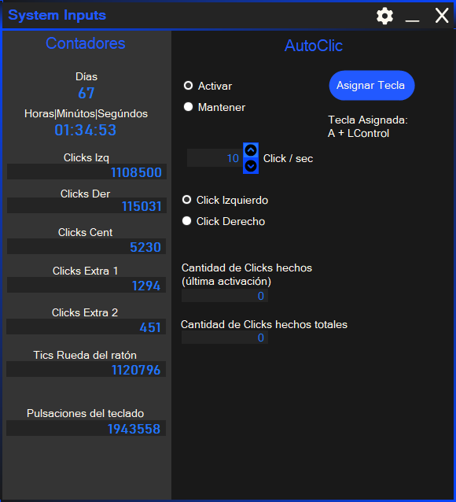
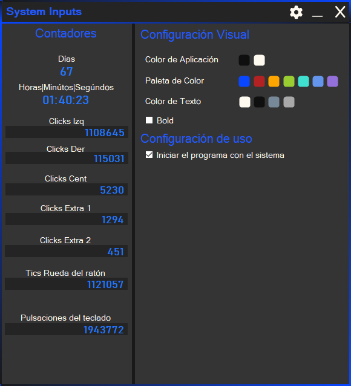

El sistema SIC, o System Inputs Controller (sistema de control de entradas), es un sistema que permite controlar la ejecución de los inputs realizados por los periféricos, más concretamente el teclado y el ratón.
Proporciona un contador de clics y un autoclic con varias opciones para su funcionamiento.
NO, este programa no es un keyloger.
Proporciona un contador de clics y un autoclic con varias opciones para su funcionamiento.
NO, este programa no es un keyloger.
FUNCIONALIDAD

CONTADORES
Este programa busca poder proporcionar un control sobre los clics y las pulsaciones de las teclas brindando contadores que cuentan los diferentes clics del ratón y las pulsaciones de cualquier tecla del teclado.¿Alguna vez te preguntaste cuanto uso le das al ratón?
¿Cuantos clics haces al día? ¿Cuantas teclas pulsas al día?
¿Haces demasiados clics?¿Que tanto uso le das a tus periféricos?
El programa facilita contadores para tener un control sobre estos datos. Además, facilita un temporizador para poder tener una referencia de tiempo.
AUTOCLICKER
Este programa incluye la posibilidad de automatizar el ingreso de comandos hacia el sistema operativo.¿Automatizar comandos? ¿Qué comandos? ¿Qué se puede automatizar?
Supongo que alguna vez has oído sobre autoclickers... ¿si?... ¿no?... bueno, en palabras simples, un autoclicker permite ejecutar múltiples clics por segundo sin tener que mover el dedo para presionar múltiples veces el clic, solo con apretar una tecla configurada por usted mismo.
El programa simula la pulsación del clic mediante comandos que interpreta y ejecuta el sistema operativo Windows.
Puede:
OPCIONES

Personalización
El programa cuenta con la posibilidad de personalizar su aspecto.¿Cómo puede hacer esto?
CONFIGURACIÓN DE FUNCIONAMIENTO
En las opciones de programa también puede cambiar una configuración importante del programa, iniciar junto con el sistema. Es importante esta función porque va a hacer que la contabilización de las teclas y los clics sea más exacto, de esta manera tiene un control del uso de sus periféricos más preciso.Cambie el color del programa ;)
DETALLES TÉCNICOS
 (C Sharp / C#)
(C Sharp / C#)
HISTORIAL DE CAMBIOS Y VERSIONES
Corrección de errores:
Se agregaron medidas para evitar la corrupción del archivo que guarda los datos de los contadores.
Se corrigieron algunos errores leves al cambiar el aspecto del programa con las opciones.
Uno intenta reparar los archivos que se corrompen para que el programa pueda continuar funcionando aunque los archivos no estén como deban estar. La segunda mejora es para intentar evitar o reducir la posibilidad de que los archivos se corrompan debido a un cierre inesperado del programa.
Hasta el momento no pude volver a simular el error, supongo que las correcciones funcionan.
==============================================================================
Corrección de errores:
En ocasiones, el autoclic no funcionaba al activarse.
No me esperaba estos errores raros pero es lo que hay, si surgen se tienen que solucionar.
El del autoclic es un error mío, cuando lo programé no puse en el orden correcto dos líneas de código, en este caso el orden de los productos si afectó al resultado.
Aún no publico el instalador, no hasta solucionar estos fallos y comprobar que no hay fallos grabes como el de corromper el archivo de contadores.
==============================================================================
Contadores funcionando correctamente.
Autoclic funcionando correctamente.
No voy a publicar el instalador hasta comprobar que el programa funciona correctamente.
De todas formas el código está en GitHub.
CÓDIGO Y PROGRAMA
GitHubDownload SIC Installer
(Si la descarga no inicia, puede descargar el instalador desde el repositorio de GitHub)
(Si la descarga no inicia, puede descargar el instalador desde el repositorio de GitHub)